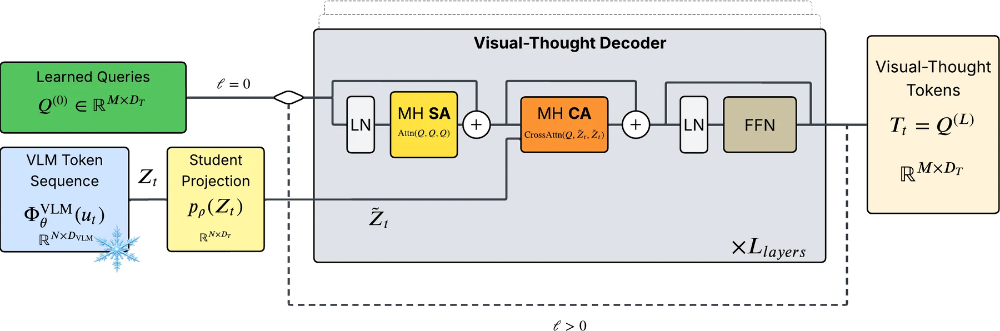
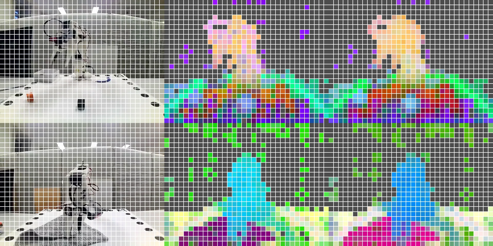
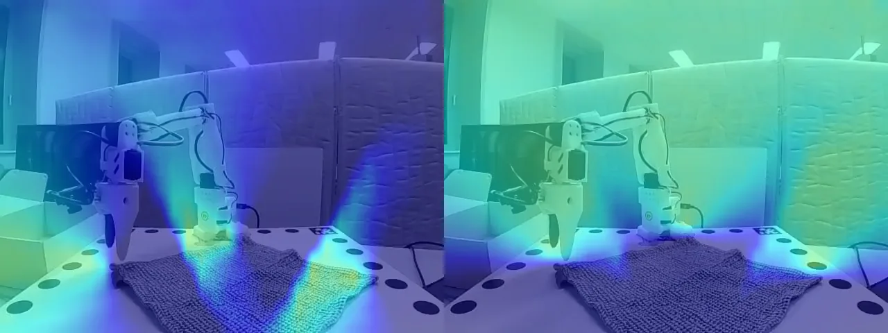
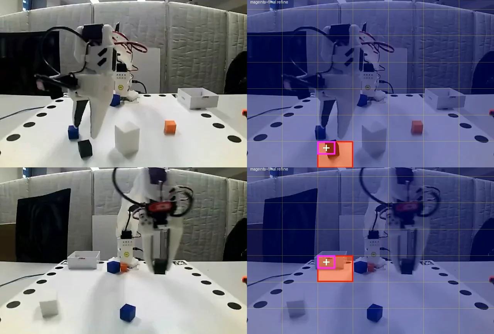
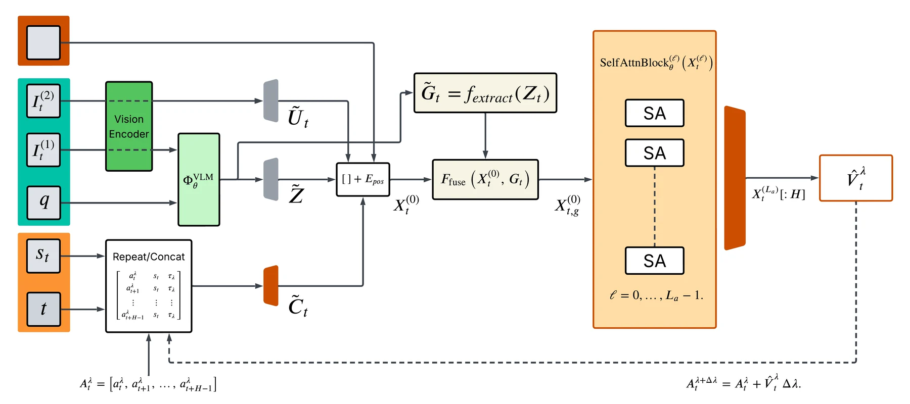

Visual Thought Tokens: Reading Perception out of a Robot’s VLA, and Feeding It Back
Overview
Does a robot’s VLA already know where the cloth corner is, and just fail to use it? My thesis reads perception out of a frozen VLA with a small decoder, then feeds it back to the action head.
X-VLA (0.9B) on an SO-ARM101 arm, trained on my own LeRobot demos: 184 cube, 70 cloth-to-box and 50 folding. Supervised by prof. Danijel Skočaj and dr. Domen Tabernik at the ViCoS lab.
A decoder that reads the frozen backbone
Learned queries cross-attend to X-VLA’s internal tokens and learn to match an expert. X-VLA stays frozen. One decoder, three jobs:
- DINOv2: rebuild the patch tokens of a DINOv2 ViT-B/14.
- CeDiRNet: rebuild its cloth-corner direction maps.
- Token grounding: point at the image tokens the instruction needs.

What the backbone already knows
Both experts can be read back out. A ~5M-parameter decoder rebuilds the corner maps with a validation error of 0.015.


Token grounding: which tokens matter right now?
One visual-thought token scores each cell of X-VLA’s 7×7 image-token grid, and the best cells are refined to 14×14. Inspired by MolmoPoint’s pointing tokens.
- Data: 4,069 image–instruction pairs, 1,524 of them negatives.
- Precision first: a wrong highlight sends the robot to the wrong object. Best checkpoint: 88% precision at 60% recall.
- Follows the task: the named cube lights up before the grasp, the box after.

Feeding it back to the policy
Implicit guidance
Reconstruction loss added while fine-tuning. Inputs unchanged.
Explicit guidance
32×32 corner tokens into the action transformer, at layers 6/12/18 or appended to its input.
Fair comparison
Every guided model has a control trained for the same extra steps.

Results on the real robot
Thesis ↗16 trials per model on each cloth task, 48 on cubes.
- Folding: implicit and layer-inserted guidance found the corner 16/16 times, but fold quality stayed low for every model (19–34%).
- Cubes: the baseline’s misses were hesitations between two cubes. With guidance it committed, sometimes to the wrong one (5 of 48).
What I took away
- The backbone knows more than the action head uses. A few million parameters can read it out.
- Guidance picks the right target. Grasping it well is a separate problem.
- Getting X-VLA running on the SO-ARM101 took work: end-effector actions, state normalisation, varied lighting and smoothed commands. Small camera shifts still hurt it.